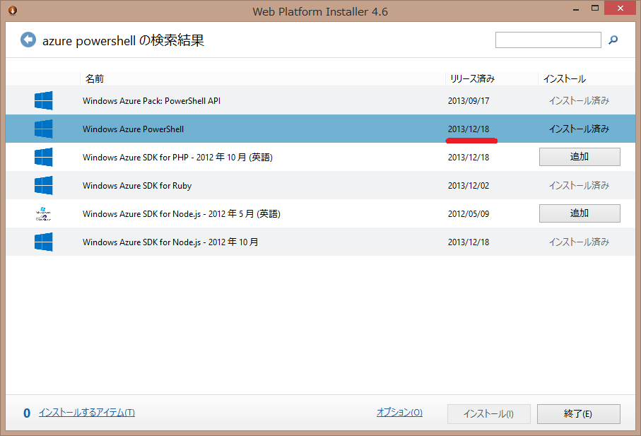

[Resolved] Windows Azure Storage Known Issues 2013/11
Windows Azure Storage Known Issues 2013/11の既知の問題が解決されたとアナウンスがありました。Windows Azure Storage Known Issues (November 2013) [Resolved]どんな感じになったのかを確認しました。
引用

問題点の確認
問題点は下記の3つが有りました。「3」は、既に、Storage Client 2.1.0.4 以降での Cast問題の修正で、Client Library 2.1.0.4、3.xで修正確認ができているので、ここでは1と2を確認します。
SASとコンテナの前の “//” 問題
下記のようなプログラムで確認しました。Signitureの生成結果を確認しやすいように、2013/12/01から一年有効なREADのSASにしています。Storage Client 2.1.0.4 では、2012-02-12 versionが使われて、コンテナの前が"//"になっていても動きましたが、3.0.1だと、2013-08-15 versionが使われ、400 のエラーで弾かれるという結果になりました。もともと、"//"と書いたら"/"と解釈されるというのはあまりイケてない動きなので、古いバージョンのみ互換性を持つように変更して新しいものでは動作変更ということにしたのは妥当な落とし所かと思います。Storage Versionによって動作が違うようです。
private static string GetSASUrl(CloudStorageAccount storageAccount, string containerName, string blobName)
{
var blobClient = storageAccount.CreateCloudBlobClient();
var container = blobClient.GetContainerReference(containerName);
var blockBlob = container.GetBlockBlobReference(blobName);
var startDate = DateTime.Parse("2013/12/01");
var sas = blockBlob.GetSharedAccessSignature(new SharedAccessBlobPolicy()
{
Permissions = SharedAccessBlobPermissions.Read,
SharedAccessStartTime = startDate,
SharedAccessExpiryTime = startDate.AddYears(1)
});
return blockBlob.Uri.ToString() + sas;
}
2.1.0.4での確認結果
Install-Package WindowsAzure.Storage -Version 2.1.0.4で2.1.0.4を入れます。何度も、違うバージョンのライブラリを入れ替えて使っていて、混乱したので念のためpackage.configの内容を併記します。
<?xml version="1.0" encoding="utf-8"?>
<packages>
<package id="Microsoft.Data.Edm" version="5.2.0" targetFramework="net451" />
<package id="Microsoft.Data.OData" version="5.2.0" targetFramework="net451" />
<package id="Microsoft.WindowsAzure.ConfigurationManager" version="1.8.0.0" targetFramework="net451" />
<package id="System.Spatial" version="5.2.0" targetFramework="net451" />
<package id="WindowsAzure.Storage" version="2.1.0.4" targetFramework="net451" />
</packages>
生成されたURLで成功を確認
{kind=link}
コンテナの前に、"/"を追加して確認、成功！
{kind=link}
sv=2012-02-12になっていて、versionがわかります。
3.0.1での確認結果
Install-Package WindowsAzure.Storageで最新版、3.0.1で確認
<?xml version="1.0" encoding="utf-8"?>
<packages>
<package id="Microsoft.Data.Edm" version="5.6.0" targetFramework="net451" />
<package id="Microsoft.Data.OData" version="5.6.0" targetFramework="net451" />
<package id="Microsoft.Data.Services.Client" version="5.6.0" targetFramework="net451" />
<package id="Microsoft.WindowsAzure.ConfigurationManager" version="1.8.0.0" targetFramework="net451" />
<package id="Newtonsoft.Json" version="5.0.8" targetFramework="net451" />
<package id="System.Spatial" version="5.6.0" targetFramework="net451" />
<package id="WindowsAzure.Storage" version="3.0.1.0" targetFramework="net451" />
</packages>
生成されたURLで成功を確認
![http://test.blob.core.windows.net/images/photo.jpg?sv=2013-08-15&sr=b&sig=[signiture]&se=2014-11-30T15%3A00%3A00Z&sp=r](http://test.blob.core.windows.net/images/photo.jpg?sv=2013-08-15&sr=b&sig=[signiture]&se=2014-11-30T15%3A00%3A00Z&sp=r){kind=link}
コンテナの前に、"/"を追加。これは失敗します。
![http://test.blob.core.windows.net//images/photo.jpg?sv=2013-08-15&sr=b&sig=[signiture]&se=2014-11-30T15%3A00%3A00Z&sp=r](http://test.blob.core.windows.net//images/photo.jpg?sv=2013-08-15&sr=b&sig=[signiture]&se=2014-11-30T15%3A00%3A00Z&sp=r){kind=link}
レスポンスを見ると下記のようになっていました。（XMLは整形してあります）
HTTP/1.1 400 The requested URI does not represent any resource on the server.
Content-Length: 434
Content-Type: application/xml
Server: Microsoft-HTTPAPI/2.0
x-ms-request-id: a9275897-8810-48b2-bcd5-d45af85f6f14
Date: Fri, 27 Dec 2013 12:34:46 GMT
<?xml version="1.0" encoding="utf-8"?>
<Error>
<Code>InvalidUri</Code>
<Message>
The requested URI does not represent any resource on the server.
RequestId:a9275897-8810-48b2-bcd5-d45af85f6f14
Time:2013-12-27T12:34:46.6851586Z
</Message>
<UriPath>
http://test.blob.core.windows.net//images/photo.jpg?sv=2013-08-15&sr=b&sig=[signiture]&se=2014-11-30T15:00:00Z&sp=r
</UriPath>
</Error>
TableのDataServiceContext.ResolveName 指定 問題
同様に、下記のようなコードを使って、2.1.0.4と、3.0.1で確認しました。 2.1.0.4 では、動作しましたが 3.0.1 では動きませんでした。結果はSASと似ているのですが、service側では処理が成功しているのでちょっと違った感じを受けます。
private static void ResolveName(CloudStorageAccount storageAccount)
{
var cloudTableClient = storageAccount.CreateCloudTableClient();
var table = cloudTableClient.GetTableReference("sometable");
table.CreateIfNotExists();
var tableServiceContext = cloudTableClient.GetTableServiceContext();
tableServiceContext.ResolveName = entityType => entityType.FullName;
var entity = new SimpleEntity("somePK", "someRK2");
tableServiceContext.AddObject("sometable", entity);
tableServiceContext.SaveChanges();
}
2.1.0.4での確認結果
普通に動いて成功しました。リクエストを見ると、categoryの属性に、term="StorageIssue201311.SimpleEntity"と有りますが、正常に処理されてレスポンスが帰ってきているのがわかります。
参考までに、リクエストとレスポンスを貼っておきます
リクエスト
POST http://test.table.core.windows.net/sometable HTTP/1.1
User-Agent: Microsoft ADO.NET Data Services
DataServiceVersion: 1.0;NetFx
MaxDataServiceVersion: 2.0;NetFx
x-ms-date: Fri, 27 Dec 2013 13:30:17 GMT
Authorization: SharedKeyLite [signiture]
x-ms-version: 2012-02-12
Accept: application/atom+xml,application/xml
Accept-Charset: UTF-8
Content-Type: application/atom+xml
Host: test.table.core.windows.net
Content-Length: 735
<?xml version="1.0" encoding="utf-8" standalone="yes"?>
<entry xmlns:d="http://schemas.microsoft.com/ado/2007/08/dataservices" xmlns:m="http://schemas.microsoft.com/ado/2007/08/dataservices/metadata" xmlns="http://www.w3.org/2005/Atom">
<category scheme="http://schemas.microsoft.com/ado/2007/08/dataservices/scheme" term="StorageIssue201311.SimpleEntity" />
<title />
<author>
<name />
</author>
<updated>2013-12-27T13:30:17.8428287Z</updated>
<id />
<content type="application/xml">
<m:properties>
<d:PartitionKey>somePK</d:PartitionKey>
<d:RowKey>someRK7</d:RowKey>
<d:Timestamp m:type="Edm.DateTime">0001-01-01T00:00:00</d:Timestamp>
</m:properties>
</content>
</entry>
レスポンス
HTTP/1.1 201 Created
Cache-Control: no-cache
Transfer-Encoding: chunked
Content-Type: application/atom+xml;type=entry;charset=utf-8
ETag: W/"datetime'2013-12-27T13%3A30%3A08.6638521Z'"
Location: http://test.table.core.windows.net/sometable(PartitionKey='somePK',RowKey='someRK7')
Server: Windows-Azure-Table/1.0 Microsoft-HTTPAPI/2.0
x-ms-request-id: 765ae397-974c-4f3c-9d3a-d4e99bdcf9f5
x-ms-version: 2012-02-12
X-Content-Type-Options: nosniff
Date: Fri, 27 Dec 2013 13:30:08 GMT
3AE
<?xml version="1.0" encoding="utf-8"?><entry xml:base="http://test.table.core.windows.net/" xmlns="http://www.w3.org/2005/Atom" xmlns:d="http://schemas.microsoft.com/ado/2007/08/dataservices" xmlns:m="http://schemas.microsoft.com/ado/2007/08/dataservices/metadata" m:etag="W/"datetime'2013-12-27T13%3A30%3A08.6638521Z'""><id>http://test.table.core.windows.net/sometable(PartitionKey='somePK',RowKey='someRK7')</id><category term="test.sometable" scheme="http://schemas.microsoft.com/ado/2007/08/dataservices/scheme" /><link rel="edit" title="sometable" href="sometable(PartitionKey='somePK',RowKey='someRK7')" /><title /><updated>2013-12-27T13:30:08Z</updated><author><name /></author><content type="application/xml"><m:properties><d:PartitionKey>somePK</d:PartitionKey><d:RowKey>someRK7</d:RowKey><d:Timestamp m:type="Edm.DateTime">2013-12-27T13:30:08.6638521Z</d:Timestamp></m:properties></content></entry>
0
3.0.1での確認結果
Install-Package WindowsAzure.Storageとして最新版、3.0.1で確認したところ、下記のようにエラーになりました。データ自体は、Tableに入っており正常終了していますが、レスポンスを読み込んでエンティティを更新するのに失敗しているようです。
ハンドルされていない例外: System.Data.Services.Client.DataServiceRequestException: この要求の処理中にエラーが発生しました。 ---> System.InvalidOperationException: メタデータ URI 'http://fooomiimg001.table.core.windows.net/$metadata#sometable/@Element' は 'fooomiimg001.sometable' という名前のエンティティ型を参照していますが、予期されたエンティティ型の名前は 'StorageIssue201311.SimpleEntity' で、'fooomiimg001.sometable' という名前のエンティティ型と互換性がありません。 ---> Microsoft.Data.OData.ODataException: メタデータ URI 'http://fooomiimg001.table.core.windows.net/$metadata#sometable/@Element' は 'fooomiimg001.sometable' という名前のエンティティ型を参照していますが、予期されたエンティティ型の名前は 'StorageIssue201311.SimpleEntity' で、'fooomiimg001.sometable' という名前のエンティティ型と互換性がありません。
場所 Microsoft.Data.OData.ReaderValidationUtils.ValidateFeedOrEntryMetadataUri(ODataJsonLightMetadataUriParseResult metadataUriParseResult, Scope scope)
場所 Microsoft.Data.OData.JsonLight.ODataJsonLightReader.ReadAtStartImplementationSynchronously(DuplicatePropertyNamesChecker duplicatePropertyNamesChecker)
場所 Microsoft.Data.OData.JsonLight.ODataJsonLightReader.ReadAtStartImplementation()
場所 Microsoft.Data.OData.ODataReaderCore.ReadImplementation()
場所 Microsoft.Data.OData.ODataReaderCore.ReadSynchronously()
場所 Microsoft.Data.OData.ODataReaderCore.InterceptException[T](Func`1 action)
場所 Microsoft.Data.OData.ODataReaderCore.Read()
場所 System.Data.Services.Client.Materialization.ODataReaderWrapper.Read()
場所 System.Data.Services.Client.Materialization.FeedAndEntryMaterializerAdapter.TryRead()
--- 内部例外スタック トレースの終わり ---
場所 System.Data.Services.Client.Materialization.FeedAndEntryMaterializerAdapter.TryRead()
場所 System.Data.Services.Client.Materialization.FeedAndEntryMaterializerAdapter.TryStartReadFeedOrEntry()
場所 System.Data.Services.Client.Materialization.FeedAndEntryMaterializerAdapter.TryReadFeedOrEntry(Boolean lazy, ODataFeed& feed, MaterializerEntry& entry)
場所 System.Data.Services.Client.Materialization.FeedAndEntryMaterializerAdapter.Read()
場所 System.Data.Services.Client.Materialization.ODataReaderEntityMaterializer.ParseSingleEntityPayload(IODataResponseMessage message, ResponseInfo responseInfo, Type expectedType)
場所 System.Data.Services.Client.SaveResult.HandleOperationResponseData(IODataResponseMessage responseMsg, Stream responseStream)
--- 内部例外スタック トレースの終わり ---
場所 System.Data.Services.Client.SaveResult.HandleResponse()
場所 System.Data.Services.Client.BaseSaveResult.EndRequest()
場所 System.Data.Services.Client.DataServiceContext.SaveChanges(SaveChangesOptions options)
場所 System.Data.Services.Client.DataServiceContext.SaveChanges()
場所 StorageIssue201311.Program.ResolveName(CloudStorageAccount storageAccount) 場所 c:\Users\Takekazu\Documents\GitHub\sandbox\csharp\StorageIssue201311\StorageIssue201311\Program.cs:行 52
場所 StorageIssue201311.Program.Main(String[] args) 場所 c:\Users\Takekazu\Documents\GitHub\sandbox\csharp\StorageIssue201311\StorageIssue201311\Program.cs:行 59
参考までに、リクエストとレスポンスを貼っておきます。これを見ると、x-ms-version: 2013-08-15 で、payloadは、Content-Type: application/json;odata=minimalmetadataになっていますが、Prefer: return-no-contentが指定されておらず、レスポンスのBodyにechoが帰ってきているのがわかります。
リクエスト
POST http://test.table.core.windows.net/sometable HTTP/1.1
DataServiceVersion: 3.0;NetFx
MaxDataServiceVersion: 3.0;NetFx
Accept: application/json;odata=minimalmetadata
Accept-Charset: UTF-8
User-Agent: Microsoft ADO.NET Data Services
x-ms-date: Fri, 27 Dec 2013 13:07:55 GMT
Authorization: SharedKeyLite [signiture]
x-ms-version: 2013-08-15
Content-Type: application/json;odata=minimalmetadata
Host: test.table.core.windows.net
Content-Length: 125
{"odata.type":"StorageIssue201311.SimpleEntity","PartitionKey":"somePK","RowKey":"someRK6","Timestamp":"0001-01-01T00:00:00"}
レスポンス
HTTP/1.1 201 Created
Cache-Control: no-cache
Transfer-Encoding: chunked
Content-Type: application/json;odata=minimalmetadata;streaming=true;charset=utf-8
ETag: W/"datetime'2013-12-27T13%3A07%3A45.3753816Z'"
Location: http://test.table.core.windows.net/sometable(PartitionKey='somePK',RowKey='someRK6')
Server: Windows-Azure-Table/1.0 Microsoft-HTTPAPI/2.0
x-ms-request-id: b1797f33-1888-487a-a0cb-0a454fca1356
x-ms-version: 2013-08-15
X-Content-Type-Options: nosniff
Date: Fri, 27 Dec 2013 13:07:45 GMT
B2
{"odata.metadata":"http://test.table.core.windows.net/$metadata#sometable/@Element","PartitionKey":"somePK","RowKey":"someRK6","Timestamp":"2013-12-27T13:07:45.3753816Z"}
0
まとめ
Windows Azure Storage Known Issues 2013/11で報告されている既知の Braking Change は、2.1.0.4 の修正と、サーバー側(service)の修正でFIXされました。ただし、SASとコンテナの前の “//” 問題は、2013-08-15 version では仕様となり、TableのDataServiceContext.ResolveName 指定 問題も、Storage Client 3.0.1 では、ResolveNameの指定をすると動作しません。 最新のライブラリを使う場合はコードを直して欲しいということだと思います。
2.1系のライブラリを使う場合は上記3点の問題がFIXされた 2.1.0.4 がお勧めです。3.x系は、幾つかのBraking Changeが含まれるので既存のコードは移行が必要ですが、2013-08-15 versionのパフォーマンス向上策がちゃんと活用できるのが大きな利点だと言えます。
| [1] | 日本語訳Windows Azure ストレージの既知の問題 |
| [2] | gitbugのWindowsAzure/azure-sdk-for-netレポジトリのmasterには、Storage Clientのコードは既にありません。2.1.0.4を確認するには、tag:v2.1.0.4 Storageを見て下さい。 |
| [3] | 3.x github |
Windows Azure Powershell 0.7.2.1 リリース
Windows Azure Powershello 0.7.2.1 Hotfix がリリースされました。Windows Azure PowerShell 0.7.2 リリースのHotfix です。
修正: Hive query “%” が含まれた場合のエンコーディングの問題をFIX ChangeLog.txt

インストール
Web Platform Installer を使うと最新版が入ります。12/18 リリースのWindows Azure Poershell を選択してください。
インストールしたら念のためバージョンを確認します。Azureの所が、0.7.2 のママです orz….
$ Get-Module | ft name,version
Name Version
---- -------
Autoload 0.0
Azure 0.7.2
Microsoft.PowerShell.Management 3.1.0.0
Microsoft.PowerShell.Utility 3.1.0.0
posh-git 0.0
PsEnv 0.0
PSReadline 1.0.0.1
今回のリリースでは、ModuleVersion が変更されていません。Azure.psd1#L15要注意です。
確認のためインストール先のアセンブリを見ます。
手元の環境では、C:Program Files (x86)Microsoft SDKsWindows AzurePowerShellAzureにインストールされています。 Explorer で、Microsoft.WindowsAzure.Commands.dllのプロパティを確認したら下記のようになっていました。0.7.2.1になっているようです。

最後に
更新だけする場合は、Web Platform Installer を起動して新しいものが出ているかどうかを確認するのが一番簡単です。
この方法だと、現在入っているバージョンは分からないので、現在入っているバージョンを知りたければ、Get-Module | ft name,versionして、0.7.2 だったら、アセンプリのバージョンを見て0.7.2.1かどうかの確認をするということになります。
ちょっと面倒ですね。
2013/12/23 追記
ModuleVersionが更新されていない件について、GitHubにIssueを上げました。
2014/1/8 追記
Issueに「0.7.3 で直すよ」と返事をもらいましたThis will be fixed in 0.7.3まだ、0.x ですし、バージョン番号を変更するためにリリースするのもどうかと思うので妥当な判断だと思います。
ちなみに、バージョン番号は、Semantic Versioningに沿って付けられているそうです。nugetでは、Versioningは、semverなので揃える方向性なんでしょうか、開発者的には分かりやすくなって嬉しいですね。
Windows Azure Storage Client Library for C++ Preview
Windows Azure Storage Client Library for C++ Preview がリリースされました
2013/12/27 Windows Azure Japan Team Blog 公式 谷訳出ました。 C++ 用 Windows Azure ストレージ クライアント ライブラリのプレビュー版をリリース
待望のC++用のライブラリです。
以下にざっくりと訳します。
抄訳 Windows Azure Storage Client Library for C++ Preview
これは、Preview release です、まだ puroduction codeでは使用しないでください（should not be used in your production code）。 その代わり、ざっと目を通して試してみて、あなたがGAに必要だと考える拡張・変更のフィードバックを下さい。
Windows Azure Storage に付いての詳しい情報は、SOSP PaperWindows Azure Storage: A Highly Available Cloud Storage Service with Strong Consistency[1]を参照してください。
Emulator Guidance
このライブラリが使う2013-08-15 RESTは、現在のAzure SDK(2.2)のStorage Emulatorでサポートされていません。これらの全ての機能をサポートしたAzure Storage Emulatorのアップデートを来月には出せる見込みです。(An updated Windows Azure Storage Emulator is expected to ship with full support of these new features in the next month)Storage Emulatorの現在のバージョンを使って開発しようとすると不正な要求エラーを受け取ることになります。アップデートが出るまでは、新機能を使用したいユーザーは、Windows Azure Storage Account (本番環境）を使ってテストをして下さい。[2]
サポートされるプラットフォーム
今回のリリースでは、Visual Studio 2012 (v110) と Visual Studio 2013 (v120) platform toolsets 用ライブラリの x64およびx86バージョンを提供します。パッケージには、8 build flavors が含まれます。
- Release, x64, v120
- Debug, x64, v120
- Release, Win32, v120
- Debug, Win32, v120
- Release, x64, v110
- Debug, x64, v110
- Release, Win32, v110
- Debug, Win32, v110
入手方法
ライブラリは、NuGetから、完全なソースコードはGitHubからダウンロードできます。NuGet packageは、CoApp toolsを使って作成され、3つのpackage として構成されています。
- wastorage.0.2.0-preview.nupkg：このパッケージには、アプリケーションの開発に必要なヘッダーとLIBファイルが含まれています。これは、再配布（redist） package に依存します。NuGet は、自動的にredist packageのインストールを行います。
- wastorage.redist.0.2.0-preview.nupkg：このパッケージを実行し、アプリケーションを再配布するために必要なDLLファイルが含まれています。
- wastorage.symbols.0.2.0-preview.nupkg：このパッケージには、それぞれのDLLファイルのシンボルが含まれています。オプションのパッケージです。
パッケージは、C++ REST SDKに依存しており、それもNuGetで自動的にインストールされます。C++ REST SDK (codename “Casablanca”)は、native code の cloud-based client-server communication のための Microsoft のプロジェクトです。これは、native code の REST services アクセスを、multiple platforms で非同期な HTTP, JSON, URIs の C++ bindings として提供します。Windows Azure Storage Client Library では、このライブラリを Windows Azure Storage Blob, Queue, Table services との通信で利用しています。
できること
ここでは、REST API に付いて話をする代わりに、Windows Azure Storage Client Library の概要を説明します。
- Windows Azure Storage REST API version2013-08-15全体を簡単に使えるようにする実装
- Retry policies: リクエストが失敗した場合の再試行ロジックとして、exponential や linear back off algorithm を実装
- Streamlined authentication model: 共有鍵と共有認証署名の両方をサポート
- 操作コンテキストとETWのログを使用して要求の詳細と結果に潜り込む能力
- サイズや、Blob typeに関係の無い、ユーザー設定による、parallel block/page アップロード
- 特定のupload/download APIに対応しなくても、読み取りまたはBLOBへの書き込みを許可するBLOB Stream
- すべてのBlob uploadおよびdownload での完全なMD5のサポート
- Table layerでは、Azure Storage Table の新しいJSON サポートを利用
- Table service の、Entity Group Transaction サポート。（Entity Group Transactionでは、単一トランザクションで複数操作が可能）
Read Access Geo Redundant Storage (RA-GRS) サポート
このリリースでは、storage account のsecondary region データへの読込アクセスをフルサポートしています。 この機能は、Portalで有効にしないと利用できません、詳しくは、RA-GRSを参照[3]して下さい。
How to use it?
NuGet package を入れると、was(Windows Azure Storageの略) のフォルダーに全てのヘッダー が入ります。 このディレクトリでは下記のheader ファイルが重要です。
- blob.h: Blob service 関連の全ての宣言
- queue.h: Queue service 関連の全ての宣言
- table.h: Table service 関連の全ての宣言
- storage_account.h: account の name/key 、あるいは connection string から、service client のオブジェクトを簡単に作成するための cloud_storage_account type の宣言
- retry_policies.h: 全ての操作で使われる、幾つかの retry policies の宣言
下記のように使います
#include "was/storage_account.h"
#include "was/queue.h"
#include "was/table.h"
#include "was/blob.h"
その後、我々は作成されますcloud_storage_accountコードの後半でサービス·クライアント·オブジェクトを作成するために私達を可能にするオブジェクトを、。私たちは安全な接続のために以下のHTTPSを使用しているが、アプリケーションをデバッグするときに、HTTPは非常に便利であることに注意してください。
その後、下記のコードでcloud_storage_account オブジェクトを作成します。 ここでは、セキュアな接続のため https を使っていますが、デバックする場合は http が非常に便利です。
wa::storage::cloud_storage_account storage_account = wa::storage::cloud_storage_account::parse(U("AccountName=<account_name>;AccountKey=<account_key>;DefaultEndpointsProtocol=https"));
Blobs
ここでは、blob container を作成し、”some text” と入ったblobを作って、それを download 、そして container 内のblobをリストします。
// Create a blob container
wa::storage::cloud_blob_client blob_client = storage_account.create_cloud_blob_client();
wa::storage::cloud_blob_container container = blob_client.get_container_reference(U("mycontainer"));
container.create_if_not_exists();
// Upload a blob
wa::storage::cloud_block_blob blob1 = container.get_block_blob_reference(U("myblob"));
blob1.upload_text(U("some text"));
// Download a blob
wa::storage::cloud_block_blob blob2 = container.get_block_blob_reference(U("myblob"));
utility::string_t text = blob2.download_text();
// List blobs
wa::storage::blob_result_segment blobs = container.list_blobs_segmented(wa::storage::blob_continuation_token());
Tables
以下のサンプルでは、 Tableを作成し、様々な型のプロパティの組をエンティティに挿入し、最終的にはその指定したエンティティを取得します。最初の検索操作では、ポイント·クエリを実行し、特定のエンティティを取得します。一方クエリ操作では、PartitionKeyが“partition”に等しく、かつ、RowKey が、“m”より大きいすべてのエンティティを照会します。これは、結果的にinsertした全てのエンティティになります。
Windows Azure Tables に関する詳しい情報は、Understanding the Table Service Data Modelの記事と、How to get most out of Windows Azure Tablesの blog post を見て下さい。
// Create a table
wa::storage::cloud_table_client table_client = storage_account.create_cloud_table_client();
wa::storage::cloud_table table = table_client.get_table_reference(U("mytable"));
table.create_if_not_exists();
// Insert a table entity
wa::storage::table_entity entity(U("partition"), U("row"));
entity.properties().insert(wa::storage::table_entity::property_type(U("PropertyA"), wa::storage::table_entity_property(U("some string"))));
entity.properties().insert(wa::storage::table_entity::property_type(U("PropertyB"), wa::storage::table_entity_property(utility::datetime::utc_now())));
entity.properties().insert(wa::storage::table_entity::property_type(U("PropertyC"), wa::storage::table_entity_property(utility::new_uuid())));
wa::storage::table_operation operation1 = wa::storage::table_operation::insert_or_replace_entity(entity);
wa::storage::table_result table_result = table.execute(operation1);
// Retrieve a table entity
wa::storage::table_operation operation2 = wa::storage::table_operation::retrieve_entity(U("partition"), U("row"));
wa::storage::table_result result = table.execute(operation2);
// Query table entities
wa::storage::table_query query;
query.set_filter_string(wa::storage::table_query::combine_filter_conditions(
wa::storage::table_query::generate_filter_condition(U("PartitionKey"), wa::storage::query_comparison_operator::equal, U("partition")),
wa::storage::query_logical_operator::and,
wa::storage::table_query::generate_filter_condition(U("RowKey"), wa::storage::query_comparison_operator::greater_than_or_equal, U("m"))));
std::vector<wa::storage::table_entity> results = table.execute_query(query);
Queues
最後の例では、Queueを作成します、それにmessageを追加、同じmessageを取得し、最終的にそれを更新します。
// Create a queue
wa::storage::cloud_queue_client queue_client = storage_account.create_cloud_queue_client();
wa::storage::cloud_queue queue = queue_client.get_queue_reference(U("myqueue"));
queue.create_if_not_exists();
// Add a queue message
wa::storage::cloud_queue_message message1(U("mymessage"));
queue.add_message(message1);
// Get a queue message
wa::storage::cloud_queue_message message2 = queue.get_message();
// Update a queue message
message2.set_content(U("changedmessage"));
queue.update_message(message2, std::chrono::seconds(30), true);
デバック方法
なにか上手く行っていない場合、exception で帰ってきます。この exception は、wa::storage::storage_exception の型で、なにか問題なのかの詳細な情報を含んでいます。次のコードを見て下さい。
try
{
blob1.download_attributes();
}
catch (const wa::storage::storage_exception& e)
{
std::cout << "Exception: " << e.what() << std::endl;
ucout << U("The request that started at ") << e.result().start_time().to_string() << U(" and ended at ") << e.result().end_time().to_string() << U(" resulted in HTTP status code ") << e.result().http_status_code() << U(" and the request ID reported by the server was ") << e.result().service_request_id() << std::endl;
}
blobが存在しない場合, このコードは下記のような結果になります。
Exception: The specified blob does not exist.
The request that started at Fri, 13 Dec 2013 18:31:11 GMT and ended at Fri, 13 Dec 2013 18:31:11 GMT resulted in HTTP status code 404 and the request ID reported by the server was 5de65ae4-9a71-4b1d-9c99-cc4225e714c6
ライブラリでは、type wa::storage::operation_context を提供しています。これは、全てのAPIでサポートされ、操作中に行われていることについてより多くの情報を取得するために使います。次のコードを見て下さい。
wa::storage::operation_context context;
context.set_sending_request([] (web::http::http_request& request, wa::storage::operation_context)
{
ucout << U("The request is being sent to ") << request.request_uri().to_string() << std::endl;
});
context.set_response_received([] (web::http::http_request&, const web::http::http_response& response, wa::storage::operation_context)
{
ucout << U("The reason phrase is ") << response.reason_phrase() << std::endl;
});
try
{
blob1.download_attributes(wa::storage::access_condition(), wa::storage::blob_request_options(), context);
}
catch (const wa::storage::storage_exception& e)
{
std::cout << "Exception: " << e.what() << std::endl;
}
ucout << U("Executed ") << context.request_results().size() << U(" request(s) to perform this operation and the last request's status code was ") << context.request_results().back().http_status_code() << std::endl;
もう一度、blobが存在しない状況で動かします。すると下記のような結果になります。
wa::storage::operation_context context;
context.set_sending_request([] (web::http::http_request& request, wa::storage::operation_context)
{
ucout << U("The request is being sent to ") << request.request_uri().to_string() << std::endl;
});
context.set_response_received([] (web::http::http_request&, const web::http::http_response& response, wa::storage::operation_context)
{
ucout << U("The reason phrase is ") << response.reason_phrase() << std::endl;
});
try
{
blob1.download_attributes(wa::storage::access_condition(), wa::storage::blob_request_options(), context);
}
catch (const wa::storage::storage_exception& e)
{
std::cout << "Exception: " << e.what() << std::endl;
}
ucout << U("Executed ") << context.request_results().size() << U(" request(s) to perform this operation and the last request's status code was ") << context.request_results().back().http_status_code() << std::endl;
Samples
github 上のプロジェクトのサンプルフォルダの中に、幾つかの重要なシナリを説明する コードがあります。
Visual Studioで「Microsoft.WindowsAzure.Storage.Samples.sln」という名前のサンプルのソリューションファイルを開きます。Microsoft.WindowsAzure.Storage.SamplesCommonプロジェクトの下samples_common.hファイルの、ストレージのアカウント情報を更新します。Solution Explorer のウィンドウに移動し、（例えば、Microsoft.WindowsAzure.Storage.BlobsGettingStarted）実行したいサンプルプロジェクトを選択してStartUp Projectにするか、コンテキストメニューから実行します。
Summary
コメント欄 （原文）、フォーラム、あるいはGitHubでのフィードバックをお待ちしています。BUGに当たった場合、GitHubに上げてもらえると、その後の解決策などをトラックすることができるようになります。
Serdar Ozler, Mike Fisher, and Joe Giardino
まとめ
C++用のクライアントは良いですね、やっぱり欲しい。
その他に、今回CoApp toolsが気になりました。native code をnugetでpackege化して配布するプロジェクトです。 Windows にapt-getみたいな位置づけに機能を盛り込むのを狙っているようで、期待できます。[4]これで、python、ruby、node.js で Windows パッケージのバイナリコードのビルドに引っかかる問題も、このレポジトリを参照することで解決できると良いなあと思いますが、今のところプロジェクトのターゲットに入っていないようで、そこはちょっと残念です。
もう一つ、http://casablanca.codeplex.com/は、MSDN C++ REST SDK (Codename “Casablanca”)に割りとしっかりしたドキュメントが上がっていて、nugetでは、production 扱いなので、使っても良さそうな感じです。C++ REST SDK 1.4.0今年の４月からパッケージとしては上がっていたようですが、気が付きませんでした。
nugetを見てみたところ、C++ REST SDK も、SDK、 Redist、Symbols の３本立てになってました。でも、SDKが1.4.0なのに他が1.3.1のままですね。
パッケージマネージャー関連は、nuget を中心に、整備が進んでいるようで、いろいろ期待できますね。
| [1] | 日本語訳SOSP 論文 Windows Azure ストレージ: 高可用性と強い一貫を両立する クラウド ストレージ サービス |
| [2] | Windows Azure Storage Client Library for Java v. 0.5.0では、An updated Windows Azure Storage Emulator is expected to ship with full support of these new features in the next couple of months.になっていました。数ヶ月先って話だったので、来月だとすると良い知らせですね。 |
| [3] | 日本語訳Windows Azure ストレージの冗長オプションと読み取りアクセス地理冗長ストレージ |
| [4] | The State of CoApp |
Windows Azure Storage Client Library for Java v. 0.5.0
Windows Azure Storage Client Library for Java v. 0.5.0 がリリースされました
2013/12/27 Windows Azure Japan Team Blog 公式 谷訳出ました。 Java v. 0.5.0 用 Windows Azure ストレージ クライアント ライブラリ
以下にざっくりと訳します。
抄訳 Windows Azure Storage Team Blog - Windows Azure Storage Client Library for Java v. 0.5.0
このリリースでは、logging support, 新しい API overloads、そして 2013-08-15 REST[1]が完全にサポートされています。今までのようにソースコードは、github Windows Azure Storage libraries for Javaで公開されています。[2]従来のようにmaven のレポジトリに登録されています。
<dependency>
<groupId>com.microsoft.windowsazure.storage</groupId>
<artifactId>microsoft-windowsazure-storage-sdk</artifactId>
<version>0.5.0</version>
</dependency>
エミュレータ ガイダンス
現在のAzure SDK(2.2)のエミュレータは、2013-08-15 RESTをサポートしていません。今後数ヶ月以内にサポートしたものを出す予定です。
Samples
githubのソースのなかに、幾つかの重要なシナリを説明するサンプルがあります。指定されたサンプルを実行するには、サンプルプロジェクトをロードし、ストレージの資格情報を提供するために、Utility.javaの次の行を更新します。
public static final String storageConnectionString = "DefaultEndpointsProtocol=http;AccountName=[ACCOUNT_NAME];AccountKey=[ACCOUNT_KEY]";
fiddler を使ってサンプル実行中の traffic を見たい場合は、Utility.java の下記の2行をコメントアウトを外してください。
// System.setProperty("http.proxyHost", "localhost");
// System.setProperty("http.proxyPort", "8888");
Note about Packaging and Versioning
このリリースで、大きな Windows Azure SDK for Java から、ストレージパッケージを独立させました。現在、既存のSDKを活用している開発者は、それに応じて依存関係を更新する必要があります。さらに、パッケージ名は、この新しい構造を反映するように変更されました：
- com.microsoft.windowsazure.storage - RetryPolicies、LocationMode、StorageException、StorageAccountなどサービス間で共通しているすべてのpublicクラス
- com.microsoft.windowsazure.storage.blob - Blob convenience implementation、Windows Azure Blobを利用しているアプリケーションは、importしてください。
- com.microsoft.windowsazure.storage.queue - Queue convenience implementation、Windows Azure Queueを利用するアプリケーションは、importしてください。
- com.microsoft.windowsazure.storage.table - Table convenience implementation、Windows Azure Tableを利用しているアプリケーションは、importしてください。
さらに詳しい情報は、以下の Change Log & Breaking Changes のセクションを見て下さい。
また、Storage Client SDK componentでは、Semantic Versioningを採用します。これは、SDKを活用する開発者に一貫した予測可能なバージョン管理指針を提供するのに役立ちます。
Whats New
Java client library の 0.5.0 では、2013-08-15 REST service version の全ての機能[1]をサポートします。
Support for Read Access Geo Redundant Storage
このリリースでは、secondary region の storage account data の読み取りアクセス (RA-GRS)[3]を完全にサポートしています。クライアントオブジェクト上の位置モードを設定し、getServiceStatsを起動すると、以下の例に示されている。LocationModeもRequestOptionsオブジェクト上に設定することで、リクエストごとに設定することができます。
下記の例では、client objectの location mode を設定して getServiceStats を呼び出すことで、 replication の状態を取得しています。
CloudStorageAccount httpAcc = CloudStorageAccount.parse(connectionString);
CloudTableClient tClient = httpAcc.createCloudTableClient();
// Set the LocationMode to SECONDARY_ONLY since getServiceStats is supported only on the secondary endpoints.
tClient.setLocationMode(LocationMode.SECONDARY_ONLY);
ServiceStats stats = tClient.getServiceStats();
Date lastSyncTime = stats.getGeoReplication().getLastSyncTime();
System.out.println(String.format("Replication status = %s and LastSyncTime = %s",stats.getGeoReplication().getStatus().toString(), lastSyncTime != null ? lastSyncTime.toString(): "empty"));
Expanded Table Protocol Support (JSON)
table traffic で、JSONがサポートされました。TableClient の setTablePayloadFormat() で、TablePayloadFormatを指定することでJSONformatを使うことができます。
CloudStorageAccount httpAcc = CloudStorageAccount.parse(connectionString);
CloudTableClient tableClient = httpAcc.createCloudTableClient();
// Set the payload format to JsonNoMetadata.
tableClient.setTablePayloadFormat(TablePayloadFormat.JsonNoMetadata);
JsonNoMetadataを指定した場合メタデータがpayloadに有りません、その場合プロパティの型はpropertyResolver を用意して下記のようにコードで解釈します。
public static class Class1 extends TableServiceEntity implements PropertyResolver {
private String A;
private byte[] B;
public String getA() {
return this.A;
}
public byte[] getB() {
return this.B;
}
public void setA(final String a) {
this.A = a;
}
public void setB(final byte[] b) {
this.B = b;
}
@Override
public EdmType propertyResolver(String pk, String rk, String key, String value) {
if (key.equals("A")) {
return EdmType.STRING;
}
else if (key.equals("B")) {
return EdmType.BINARY;
}
return null;
}
}
この、propertyResolver は、TableRequestOptions にセットします。
Class1 ref = new Class1();
ref.setA("myPropVal");
ref.setB(new byte[] { 0, 1, 2 });
ref.setPartitionKey("testKey");
ref.setRowKey(UUID.randomUUID().toString());
options.setPropertyResolver(ref);
Table Insert Optimizations
以前のバージョンでは、Table Insertのレスポンスでentity全体が返されていましたが、このバージョンから inserts が成功したときは 204 (no-content) でbodyは空がかえるようになりました。従来と同じように動作させるには、insert(TableEntity, boolean) method に true を指定します。
Table Reflection Optimizations
clients が、POJOを永続化するときに、繰り返しの reflection calls を無くすために、type や property information をcacheするようにしました。この最適化の結果劇的にCPU時間が削減されます。このCache機能を無効にするには、TableServiceEntity.setReflectedEntityCacheDisabled(true) を使って下さい。
New APIs and overloads
customer feedback から下記のAPIを追加しました、
- CloudBlob.downloadRange
- CloudBlob.downloadToByteArray
- CloudBlob.downloadRangeToByteArray
- CloudBlob.uploadFromByteArray
- CloudBlob.uploadFromByteArray
- CloudBlob.downloadToFile
- CloudBlob.uploadFromFile
- CloudBlockBlob.uploadText
- CloudBlockBlob.downloadText
Change Log & Breaking Changes
このリリースには、 2013-08-15 REST[1]のサポート以外にも幾つかの重要な変更があります。要点を下記にまとめます。
Common
- Package の再構築
- RetryResultが追加機能を提供しRetryInfoに置き換えられています
- request中に起きるevent operations (event firingを含む) は、同期では無くなりました。 (thread safety は、event listenersのCopyOnWriteArrayList で保証されます)
- OperationContext.sendingRequest eventは、 headerを変更することができるように connection が established されるまえに fireされます
Blob
- BlobdownloadRangeはStreamにダウンロードします。以前のdownloadRangeはdownloadRangeToByteArrayに変更されました
- sparse page blob feature は削除されました
- CloudBlobContainer.createIfNotExistはCloudBlobContainer.createIfNotExistに改名されました
- CloudBlobClient.streamMinimumReadSizeInBytesは削除されました。この機能は、はCloudBlob.streamMinimumReadSizeInBytesで提供さえます（これは、Client毎のではなくBlob毎の設定です）
- CloudBlobClient.pageBlobStreamWriteSizeInBytesとCloudBlobClient.writeBlockSizeInBytesは削除されました。この機能は、CloudBlob.streamWriteSizeInBytesで提供されます
Table
- TableResultから id field が削除されました（getId、setIdも）
- CloudTable.createIfNotExistはCloudTable.createIfNotExistに名前が変更されました
- Insert 操作はcontents echoをしません。
- デフォルトのPayload形式は、JsonMinimalMetadataになりました。CloudTableClient.setTablePayloadFormatで全てのリクエスト、あるいは個々のリクエストでTableRequestOptions.setTablePayloadFormatを使ってpayload formatを変更することができます
Queue
- CloudQueue.createIfNotExistはCloudQueue.createIfNotExistに名前が変更されました
Resources
Windows Azure Storage Release - Introducing CORS, JSON, Minute Metrics, and More
Windows Azure Tables: Introducing JSON
Windows Azure Storage Redundancy Options and Read Access Geo Redundant Storage
最後に
0.4 にあった、Azure SDK for Java 0.4.6 long値のfilter BUGは無事改修されているようです。https://github.com/WindowsAzure/azure-storage-java/commit/834daae4e23b51e16e65e5bbf13096075d1f47ca#diff-f8d410db4741b0e56a8050948b11115c
| [1] | (1, 2, 3) version 2013-08-15 storage英語日本語SATO NAOKI訳 |
| [2] | 0.4 までは、azure-sdk-for-javaだったのですが、レポジトリが変わり。 0.5からは、azure-storage-javaになりました。.NETのStorage Clientと同じような名前変更がされたようです。 |
| [3] | Windows Azure ストレージの冗長オプションと読み取りアクセス地理冗長ストレージ |